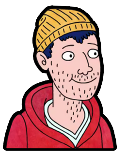
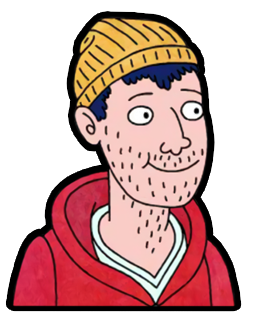

Who and What is BoJack Horseman?
One of the most underrated TV shows on Netflix is BoJack Horseman. A common deterrent for people is the fact that it's an adult cartoon. But, just as "Bob's Burgers" has shown, not all adult cartoons are cringey, racist, or otherwise problematic (but I digress...) The show features a washed up TV actor, BoJack, who struggles to find and mantain happiness due to his cynical worldview. Other characters include his assertive agent, Princess Carolyn, his nerdy ghostwriter Diane, his enthusiastic fellow actor, Mr. Peanutbutter, and his stoner roommate, Todd. What makes this show interesting is how these different characters interact. One would expect these distinct personalities to be completely incompatible, but the show's witty script creates a natural flow.
Alright... Enough Horsin' Around... Let's Get to Business!
There are countless iconic characters in BoJack Horseman (Sextina Aquafina, A Ryan Seacrest Type, Officer Meow Meow Fuzzyface, Vincent Adultman, Character Actress Margo Martindale... need I go on?) However, we need to be realistic about data collection so that we can analyze characters who actually have character arcs. So, the five characters we will be examining are BoJack, Princess Carolyn, Diane, Mr. Peanutbutter, and Todd. Click on one of them to get started!

 

The 5 main characters
Word Count
Throughout the four seasons, BoJack spoke
45,743 words
This is the most of all the main characters.
Character Interaction
How many times he says each character's name:
- BoJack: 126
- Todd: 118
- Diane: 70
- Mr. Peanutbutter: 37
- Princess Carolyn: 29

"I"

"you"
"the"
"a"
Word Count
Throughout the four seasons, Princess Carolyn spoke
16,087 words
Character Interaction
How many times she says each character's name:
- BoJack: 76
- Todd: 23
- Diane: 19
- Princess Carolyn: 19
- Mr. Peanutbutter: 11
"I"
"you"
"the"
"a"
Word Count
Throughout the four seasons, Diane spoke
15,790 words
Character Interaction
How many times she says each character's name:
- BoJack: 68
- Mr. Peanutbutter: 41
- Diane: 31
- Todd: 17
- Princess Carolyn: 5
"I"
"you"
"the"
"a"
Word Count
Throughout the four seasons, Mr. Peanutbutter spoke
16,034 words
Character Interaction
How many times he says each character's name:
- Diane: 74
- BoJack: 64
- Todd: 37
- Mr. Peanutbutter: 33
- Princess Carolyn: 8
"I"
"you"
"the"
"a"
Word Count
Throughout the four seasons, Todd spoke
14,362 words
This is the least of all the main characters.
Character Interaction
How many times he says each character's name:
- BoJack: 60
- Todd: 33
- Mr. Peanutbutter: 31
- Princess Carolyn: 19
- Diane: 15
"I"
"you"
"the"
"a"